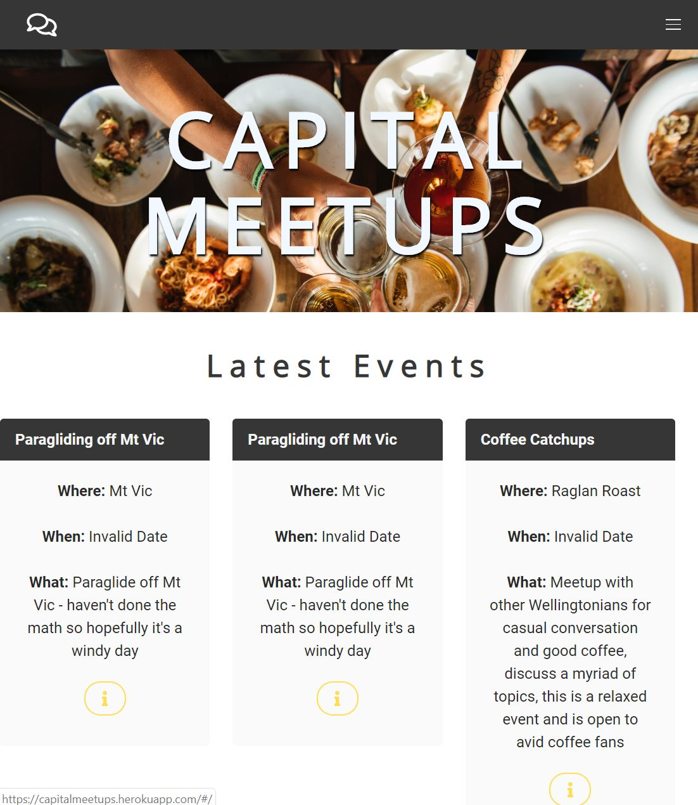
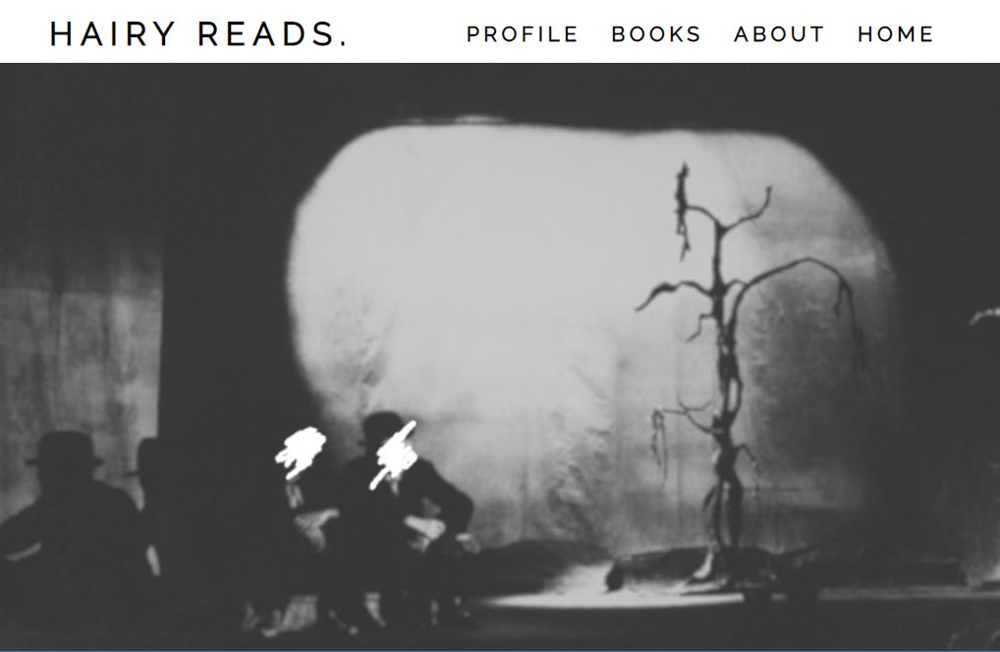
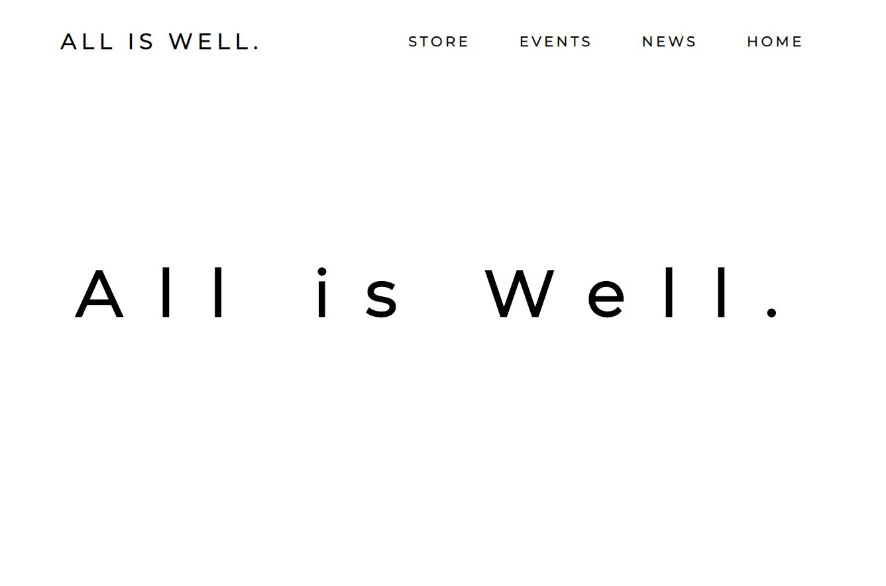
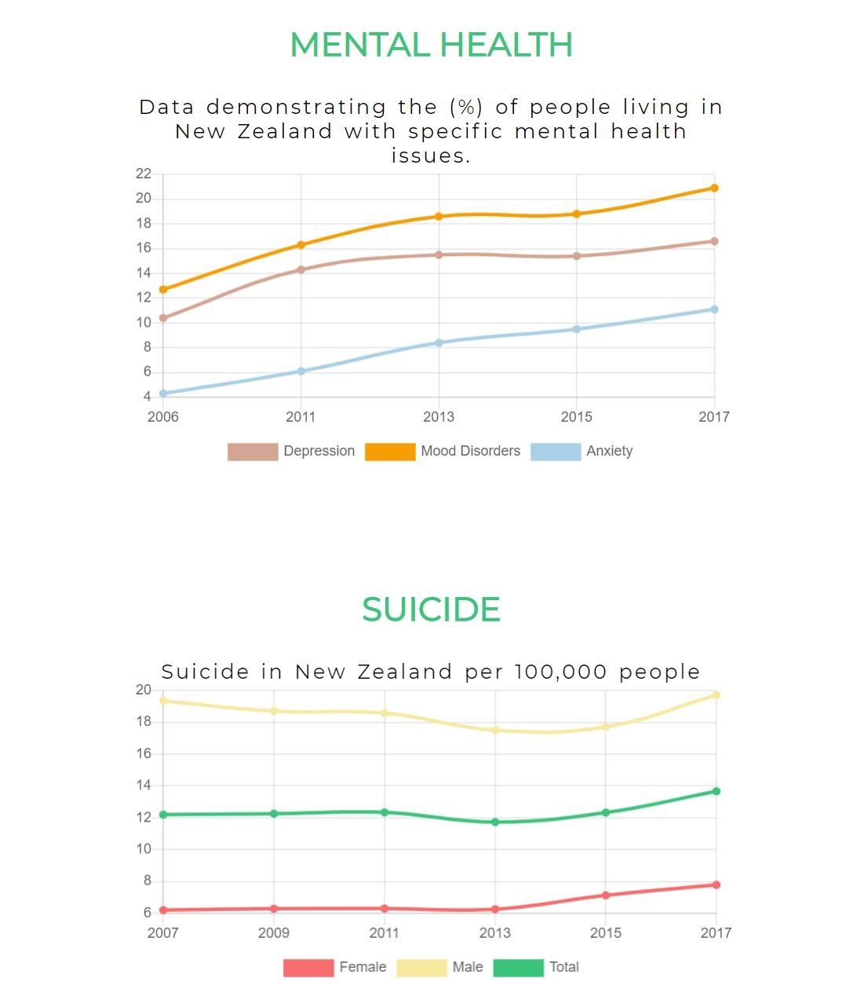
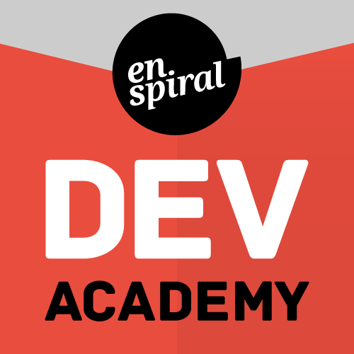
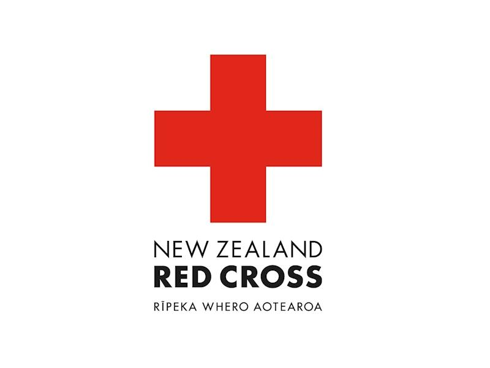

Harry Candlish
Building toward becoming a skilled software developer through augmenting my current skills and knowledge.
CONTACT
PROJECTS
CAPITAL MEET-UPS
the final project for Enspiral Dev Academy. The class was segmented into groups, and each group had a week to build a application for presentation. Our group that consisted of Alex, Nat, Arpo, Ranjit and myself worked on differing aspects of the project. At the beginning we assigned the components of the project based on the skills that people were not confident in. Through doing this we were required to focus on Agile based techniques in keeping up with tasks.
WHAT I LEARNT WORKING ON THE PROJECT
1.Self-directed Learning
2. Helping others through the course.
3. Self-discipline.
4. In coding sixty hours a week, when something comes up outside of the course, handle it accordingly and keep going.
5. Staying passionate and setting goals and planning on how to reach those goals.
SQlite, React, Redux, Team Managment
CODE
APP
HAIRY-READS
Worked on an individual project during Enspiral. The project was completed outside of class hours and was fundamental in helping us acknowledge our own strengths and weaknesses. My plan was to create a reading diary, wherein the user could follow their reading progress, what books they wanted to read, what books they were reading, etc. To do this I attempted to use the GoodReads API and use the data so the user could access numerous books. I was unable to access the API and was forced to settle for another API with less data.
WHAT I LEARNT WORKING ON THE PROJECT
1. Self-Discipline in working independently on an individual project.
2. Organising, planning, and time managment.
3. The fundamental thing I learnt working on the project, was recognising my own abilities, what I'm best at and what I need to work on.
4. In using external API's, you rely heavily on the organisation providing the API. In attempting to use the GoodReads API, I failed in that there wasn't much incentive for them to give out the data they have. This made it almost impossible to get.
5. At all points, ask for help for reasons of effiency
CODE
ALL IS WELL
A business idea; selling branded clothing to promote mental health awareness in Wellington. Front-end is built using React, Chart-JS, Sass and HTML. Backend is built using Express, SQlite, Knex.
WHAT I LEARNT WORKING ON THE PROJECT
Front-End
1. Basic React functionality.
2. State and props
3. Handle Changes and events
4. Accessing data Id
5. Sass and design patterns
6. Chart JS
Back-End
1. Express
2. Sqlite and Knex
3. Creating Databases
4. Routes
5. Database Functions
6. Sharing Data Across Back-End and Front-End
Back-End Code
Front-End Code
EXPERIENCE
ENSPIRAL DEV ACADEMY
The Enspiral programme involves over 1000 hours of coding experience, and relies on its students to be self-directed, hardworking, competent in working with others. And because Enspiral simulates a real work environment, it demands of its students that they conduct themselves professionally throughout the course.
MY RESPONSIBILITIES AT ENSPIRAL
1.Self-directed Learning
2. Helping others through the course.
3. Self-discipline.
4. In coding sixty hours a week, when something comes up outside of the course, handle it accordingly and keep going.
5. Staying passionate and setting goals and planning on how to reach those goals.
NEW ZEALAND RED-CROSS
Volunteering had a significant influence on how it is I view the world, it helped me discover the rewards associated with helping others, and though my role was small in comparison to what some others are doing. It really gave me a sense of what I want to do going forward, which is to impact society in a positive way.
MY RESPONSIBILITIES AS A VOLUNTEER
1. Helping with finance and teaching how to use finance related technologies and systems.
2. Health and medical appointments.
3. Flat maintenance and paperwork
4. Accompanying him to meetings, Wellington City Council, Work and Income.
5. Coffee
HOSPITALITY : WELLINGTON HOSPITALITY GROUP
Customer service skills are important in any industry, and through my time working in hospitality I’ve learnt how to communicate with anyone that has had a significant impact on my relationships outside the role.
MY RESPONSIBILITIES IN HOSPITALITY
1. Costumer Service
2. Staff Training.
3. Communication
4. Money Handling.
5. Dealing with disgruntled customers.